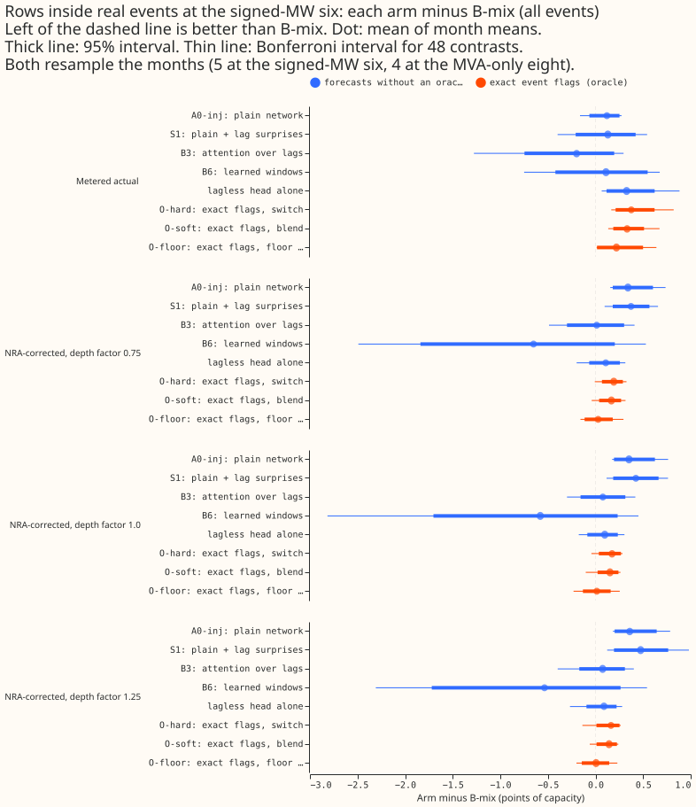
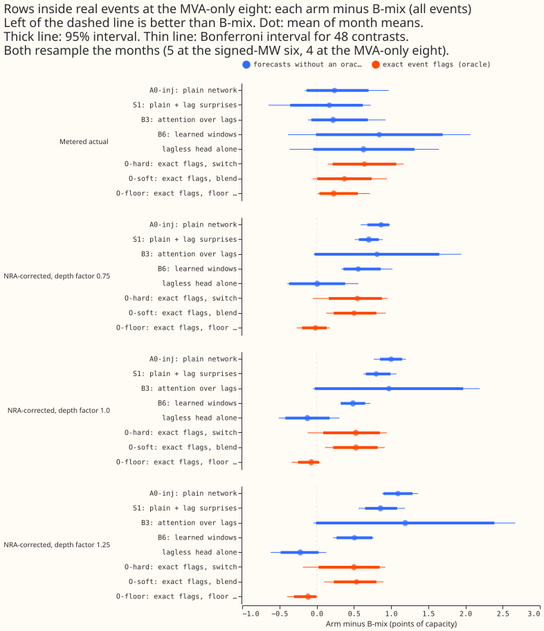
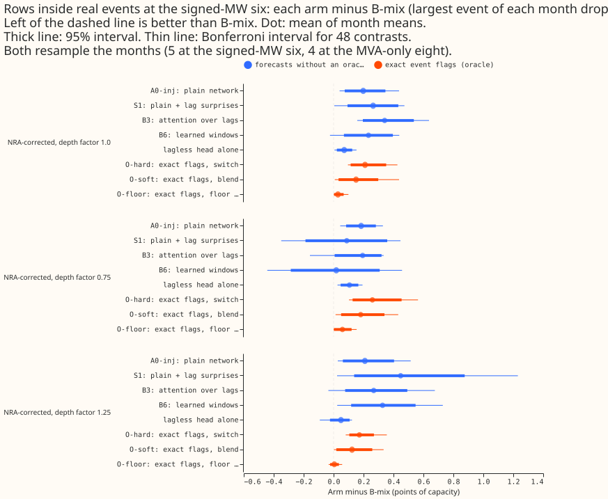

Does an exact record of which power readings lie inside a load-shift event help a lagged and lagless mixture when the forecast is scored against the normal running arrangement?
Knowing exactly which recent readings lie inside a load-shift event still does not make a mixture beat B-mix, even when forecasts are scored against the normal running arrangement (NRA). B-mix is the fixed 50/50 mixture of the plain lagged neural-network forecast (A0-inj) and the lagless forecast. At the six primary substations (Primaries) metered in signed megawatts (the signed-MW six), O-hard switches to the lagless forecast whenever an exact flag marks a lag. It scores 0.16 to 0.19 points of capacity worse than B-mix at the three depth factors of experiment 435's NRA correction, against 0.38 worse on metered actuals. Event detection is therefore not a blocker for the lag-trust line. The numbers are interim and unaudited.



Scope and definitions
This experiment fits nothing. It rescores forecasts stored by experiments 404 and 445 on the rows inside real events. It adds the lagless head and the three flag-oracle mixtures of experiment 445 to the rescore that experiment 404's audit ran for its own arms.
- Row 1 of the lag-trust review (the audit re-pool of experiment 404) is answered by experiment
404's audit, not here:
e00404_audit.pyand the filescells.parquet,pooled_event_weighted.csv, andevent_counts.csvin 404'swork/audit/folder. Experiment 404's audit found B3 and B6 behind B-mix when months are weighted by events (+0.13 and +0.15). It also found that the 1.15 widening and table P (experiment 435's recalibration of the tail quantiles) move every entry by 0.03 or less, so A0-inj minus B-mix on clean rows stays near +0.29. - Arms. A0-inj is the plain lagged neural network trained on injected events, S1 is A0-inj plus the lag surprise, B3 is attention over the lags, and B6 is learned windows over the surprise series. The lagless head scores on its own. O-hard, O-soft, and O-floor mix the lagged and lagless forecasts using the exact flags: O-hard switches to the lagless forecast when any lag is flagged, O-soft puts weight (flagged lags / 3) on it, and O-floor puts 0.5 plus half the flagged share on it. Scores are the continuous ranked probability score (CRPS) in points of capacity.
- Groups. The MVA-only eight are the eight Primaries that report apparent power in megavolt amperes (MVA) only, so their sign is unknown. D15 and D18 are the two short-history Primaries.
- Harm row. The scoring code (experiment 428's window flags) calls a row a harm row when its target lies outside every padded real event and outside the 96 half-hours after one. It also requires that any observed half-hour of the three day-windows of its lags lies inside a padded event. Experiment 404's plan defined a harm row on the three origin lags only. A clean row has no real event near it. A row "inside real events" has its target inside a padded event or in the 96 half-hours after one; experiment 455 scores those rows.
- Event counts. The five scored months overlap 46 corrected events (21 at the signed-MW six, 16 at the MVA-only eight, 9 at D15 and D18) and 42 padded runs. Experiment 445 counts 49 and experiment 435 counts 41 with different windows. At the six the bootstrap clusters are 18 on harm rows, 25 inside events, and 37 on clean rows. The whole history holds 184 corrected events (170 padded runs).
- Unlogged-event caveat. NGED says load-shift events may be missing from its logs. The 46 events are a lower bound, so rows called clean may hold unlabelled real events, and the harm and inside-event rows undercount. The NRA-corrected actuals correct only labelled events (a measured deviation for 34 of 184, the labelled depth for the other 150).
Results
- Rows and scores. Rows are the real-event rows of forecasts with leads of 0 to 240 hours, as in 404's audit. The score is the mass-weighted pinball loss in points of capacity from 11 quantiles. A contrast is the arm's score minus B-mix's on the same rows, mean of month means (seeds within a month averaged first), so negative is better than B-mix. B-mix scores 13.13 at the signed-MW six and 9.36 at the MVA-only eight at depth 1.0 (5.94 and 7.76 on metered actuals). B6 has fit seed 0 only; the other arms have seeds 0 to 2 in 2026-06.
- Intervals. Resampling the months gives a 95% interval and a Bonferroni interval for 48 contrasts (8 arms against B-mix, at 3 depth factors, in 2 groups; the metered column and the drop-largest variants repeat contrasts and are not counted again). Five months (four at the MVA-only eight, which has no 2026-06 real-event rows) cannot resolve the Bonferroni tail beyond the smallest and largest resampled mean, so a Bonferroni interval is nearly the range of the monthly values and is conservative. The minimum detectable effect (2.8 times the standard error of the monthly differences) is in the last column. The Bonferroni tails come from 20,000 resamples of 4 or 5 months and can move by a few hundredths between runs.
Signed-MW six, depth factor 1.0, inside real events (25 events, 5 months):
| Arm | Arm score | Arm minus B-mix [95%] (Bonferroni) | Largest event of each month dropped (Bonferroni) | Minimum detectable effect |
|---|---|---|---|---|
| A0-inj | 13.48 | +0.35 [+0.19, +0.62] (+0.17, +0.76) | +0.20 (+0.04, +0.44) | 0.38 |
| S1 | 13.55 | +0.42 [+0.19, +0.66] (+0.12, +0.76) | +0.26 (+0.01, +0.47) | 0.38 |
| B3 | 13.21 | +0.08 [-0.16, +0.31] (-0.30, +0.42) | +0.34 (+0.16, +0.64) | 0.40 |
| B6 | 12.56 | -0.58 [-1.70, +0.23] (-2.82, +0.45) | +0.23 (-0.02, +0.44) | 1.64 |
| lagless | 13.22 | +0.10 [-0.09, +0.23] (-0.18, +0.30) | +0.07 (+0.01, +0.15) | 0.26 |
| O-hard | 13.30 | +0.17 [+0.04, +0.27] (-0.04, +0.28) | +0.21 (+0.10, +0.43) | 0.20 |
| O-soft | 13.28 | +0.15 [+0.02, +0.24] (-0.10, +0.26) | +0.15 (+0.01, +0.44) | 0.18 |
| O-floor | 13.14 | +0.01 [-0.13, +0.16] (-0.23, +0.26) | +0.03 (+0.00, +0.10) | 0.21 |
MVA-only eight, depth factor 1.0 (26 events, 4 months):
| Arm | Arm score | Arm minus B-mix [95%] (Bonferroni) | Largest event of each month dropped (Bonferroni) | Minimum detectable effect |
|---|---|---|---|---|
| A0-inj | 10.36 | +1.00 [+0.85, +1.15] (+0.77, +1.20) | +0.63 (+0.38, +0.89) | 0.27 |
| S1 | 10.16 | +0.80 [+0.66, +0.99] (+0.63, +1.07) | +0.57 (+0.42, +0.77) | 0.27 |
| B3 | 10.33 | +0.97 [-0.03, +1.97] (-0.05, +2.19) | +0.91 (+0.25, +1.73) | 1.63 |
| B6 | 9.85 | +0.49 [+0.32, +0.65] (+0.32, +0.72) | +0.27 (+0.00, +0.49) | 0.28 |
| lagless | 9.24 | -0.12 [-0.42, +0.17] (-0.51, +0.31) | -0.02 (-0.15, +0.19) | 0.51 |
| O-hard | 9.89 | +0.53 [+0.09, +0.85] (-0.12, +0.94) | +0.33 (+0.22, +0.39) | 0.64 |
| O-soft | 9.89 | +0.53 [+0.22, +0.82] (+0.11, +0.92) | +0.20 (-0.01, +0.34) | 0.46 |
| O-floor | 9.29 | -0.07 [-0.25, +0.03] (-0.34, +0.05) | -0.01 (-0.06, +0.02) | 0.25 |
- O-hard minus B-mix at the signed-MW six is +0.19 [+0.07, +0.29] at depth 0.75, +0.17 [+0.04, +0.27] at 1.0, and +0.16 [+0.01, +0.25] at 1.25 (95% intervals, positive means B-mix is better). With the largest event of each month dropped it is +0.26, +0.21, and +0.17, with Bonferroni intervals above zero at all three (+0.10 to +0.56, +0.10 to +0.43, +0.08 to +0.35). The rule for "detection matters" needs a negative contrast, so it is not met at any depth.
- Metered actuals give O-hard +0.38 [+0.21, +0.62] at the six. The NRA correction therefore removes about half of the gap but not the sign.
- At the MVA-only eight O-hard is +0.50 to +0.55 behind at the three depths (Bonferroni intervals include zero for O-hard and exclude it for A0-inj, S1, and B6). The lagless head is ahead of B-mix at depth factors 1.0 and 1.25 (-0.12 and -0.22) and level at 0.75 (+0.01). O-floor is ahead at all three (-0.02 to -0.12). Only O-floor at depth 1.25 has a 95% interval that excludes zero (-0.31 to -0.00), and no Bonferroni interval does.
- Against the predictions. P1 holds (the O-hard contrast stays above zero, moving from +0.38 to +0.16 to +0.19). P2 holds at the six (the lagless head is +0.09 to +0.11 behind at every depth, with intervals that include zero). P3 fails: dropping the largest event of each month never changes the sign of an O-hard contrast.
- Checks. No new forecast is written, so the median-minus-mean and mean-forecast-error checks do not apply. None of the audit triggers fired: the numbers for A0-inj, S1, B3, and B6 reproduce 404's audit tables (+0.35, +0.42, +0.08 at depth 1.0 at the six).
Caveats
- Few months and events. Five months and 25 events at the six cannot detect a difference below about 0.2 points of capacity for the oracle arms and 0.26 to 1.64 for the others (0.38 to 0.40 for A0-inj, S1, and B3), and the MVA-only eight has four months.
- Depth. The NRA correction uses the labelled depth for 150 of 184 events, so the correction's error is repeated at all three depth factors, which scale the same correction.
- Tails. Experiment 455 scores CRPS only. The tails and the avoidable-curtailment cost are not rescored; experiment 445 found B-mix's q99 covers 71.8% inside real events at the six.
- Row set. Rows with leads above 240 hours are excluded to match 404's audit; experiment 445's +0.465 includes them, which is why the metered figure here is +0.38.
- Unlogged events may sit in clean rows and make every event slice an undercount (see above).
What to try next
- Stop work on event detection for the mixture rule. Exact flags lose to B-mix under both targets.
- Row 3 of the lag-trust review (a mixture and ensemble family) and the ambiguous-world test are the live lines; experiment 455 changes neither.